PL — Poland
The main impact of a 200 basis-point (2.00 percentage-point) rise in United States interest rates on Poland is a 0.03% drop in GDP by the 11th quarter — a minimal spillover. Poland ranks 26th of the countries in this run by absolute GDP response, and the band is "minimal." The shock is a US monetary tightening, and Poland's real GDP (Y) never falls by more than roughly three-hundredths of a percent relative to baseline. The path builds slowly: −0.0013% in Q1, −0.0047% by Q4, −0.0214% by Q8, peaking at −0.0285% in Q11, then decaying to −0.0074% by Q20. This is a small, delayed, and largely self-correcting drag, not a crisis.
Demand and trade. Household consumption (C) follows the same hump shape, peaking at −0.0102% in Q11 and easing to −0.0032% by Q20 — a modest hit to spending, consistent with weaker labour income and tighter local credit. Private investment (I) is the hardest-hit domestic demand component, peaking at −0.0977% in Q9, roughly ten times the consumption effect, before recovering to +0.002% by Q20 as the cost-of-capital shock fades. Net exports (NX) — the trade balance, since this model does not split imports from exports — improve, peaking at +0.0494% in Q10 and still +0.0206% by Q20; the weaker domestic demand and stronger currency both push the external balance up. Government spending (G) rises slightly, peaking at +0.0056% in Q11, a mild automatic-stabiliser offset. Government debt (B) is flat at 0.0% throughout — the model holds it unchanged over this horizon.
External / FX. The real exchange rate (Currency Strength, RER) appreciates, peaking at +0.1586% in Q9 and remaining +0.058% by Q20. A stronger zloty in real terms is exactly what you would expect alongside an improving net export balance here: the currency appreciation and the trade-balance gain move together, reflecting the relative-price channel rather than a competitiveness loss dominating.
Labour. Employment (N) declines gradually, peaking at −0.0141% in Q15 and still −0.0093% by Q20 — a slow, persistent labour-market drag. Unemployment (unemployment) rises in parallel, peaking at +0.0103 percentage points in Q14 and easing to +0.0065pp by Q20. Real wages (w) actually rise, peaking at +0.0276% in Q12 and fading to +0.0007% by Q20; with inflation falling faster than nominal wages, real compensation improves even as employment softens.
Prices. CPI inflation (pi_cpi) rises initially, peaking at +0.0125 percentage points in Q2, then turns negative after Q10 and ends at −0.0033pp by Q20. Domestic inflation (pi) mirrors this, peaking at +0.0087pp in Q2 and turning negative after Q10, ending at −0.0023pp. Firms' marginal cost (mc) falls, peaking at −0.0169% in Q11 and −0.0044% by Q20 — weaker demand and a stronger currency compress costs, which is what eventually pulls inflation below baseline.
Financial conditions. The local policy rate (i) rises modestly at first, peaking at +0.0204pp in Q5, then falls below baseline after Q12 and ends at −0.0132pp by Q20 — a small, temporary tightening followed by easing. Government yields move in a mixed pattern: the 2-year yield (y2) peaks at +0.0179pp in Q2 and turns negative after Q9, ending at −0.0082pp; the 5-year yield (y5) peaks at −0.0085pp in Q12; and the 10-year yield (y10) peaks at −0.0045pp in Q12. Bond prices (Q_B) fall sharply, peaking at −0.3455% in Q8, then recover and turn positive after Q16, ending at +0.055%. Equity prices (equity) fall hardest among financial variables, peaking at −0.3309% in Q8 and still −0.0236% by Q20. Tobin's Q (Q) — the value of installed capital — falls to −0.0684% in Q9 and returns to +0.0014% by Q20. House prices (P_H) decline persistently, peaking at −0.0261% in Q17 and −0.0251% by Q20. Bank credit (credit_supply) contracts only marginally, peaking at −0.0032% in Q16, and lending spreads (lending_spread, Credit Spread) widen by a trivial +0.0001pp at peak — financial frictions are essentially absent in this response.
Sectoral and capital. Manufacturing GDP (gdp_manufacturing) is the most exposed sector, peaking at −0.0471% in Q9 and still −0.0145% by Q20 — a larger and earlier hit than the aggregate. Services GDP (gdp_services) falls less, peaking at −0.0179% in Q11 and −0.0047% by Q20. The capital stock (K) erodes very slowly, peaking at −0.0048% in Q19, reflecting the cumulative investment weakness.
Timing. The GDP hit is largest in Q11 at −0.0285%, and it has not fully faded by Q20 — the response is still −0.0074%, about a quarter of the peak. The equity and bond-price troughs come earlier, around Q8, while labour-market and house-price effects lag into the mid-teens. The shock is small but slow-moving.
Close. These are model impulse responses to a US rate shock relative to baseline, not forecasts. They describe how Poland's block behaves under the model's estimated transmission, with the US tightening feeding through trade, financial conditions, and the exchange rate. The headline number to carry into the desk discussion is a peak GDP drag of about 0.03% in Q11 — a limited spillover.
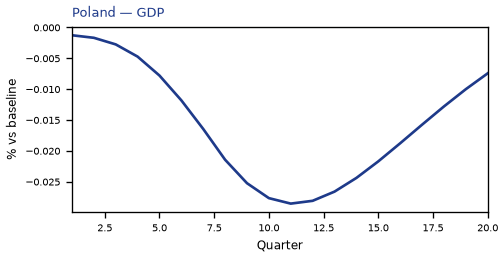
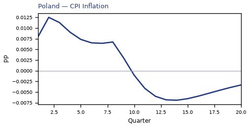
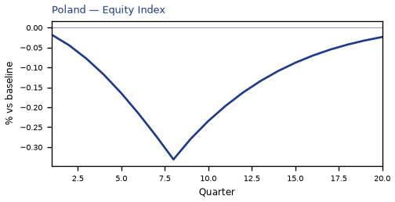
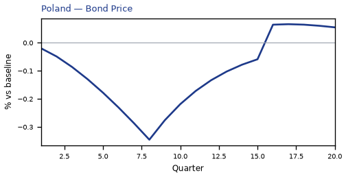
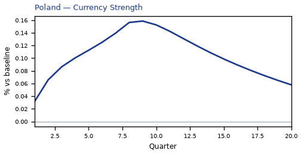
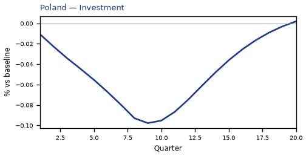
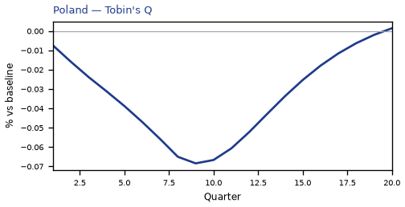
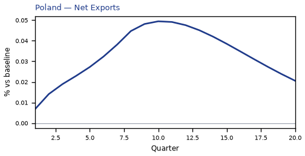
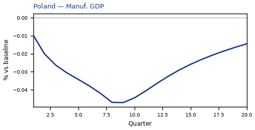
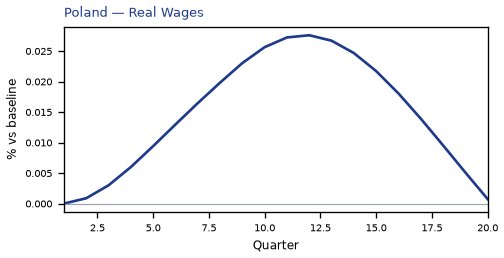
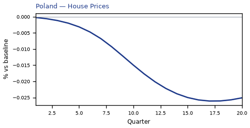

source=live · global_macro_v5 · contract v6 · Q1–Q20 JSON · not financial advice